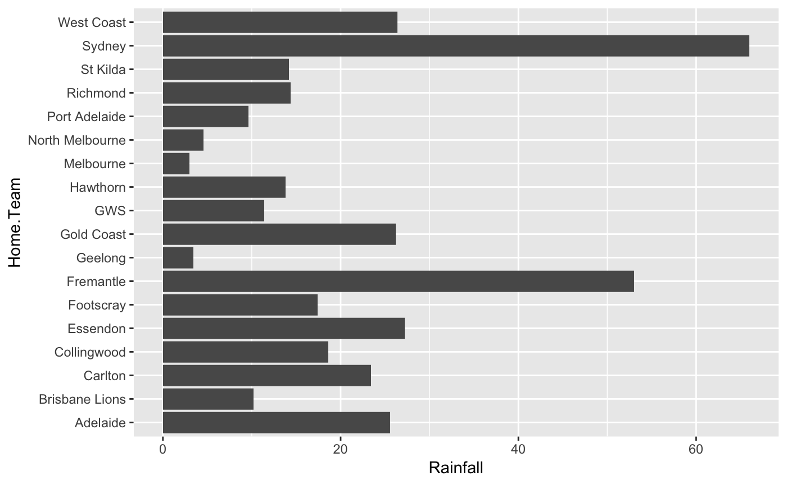

vignettes/mens-stats.Rmd
mens-stats.RmdThe goal of fitzRoy is to provide a set of functions that allows for users to easily get access to AFL data from sources such as afltables.com and footywire.com. There are also tools for processing and cleaning that data. Future versions will include basic ELO processing functions.
The fitzRoy package can be used to simply get data from various sources. Some minimal working examples are below.
Primarily, the tool can be used to access data from various sources. Data is included in the package and can be access directly however this will not be up to date. Each source of data has functions for updating data during the season.
You can access the basic afl tables match results data. This includes all matches from 1897-current. It is generally updated on the day after a round finishes.
You can access the data directly from the package using match_results. This will be updated periodically but you will need to update your R package to get access to the latest data. It is better to use get_match_results directly, as this will give you up to date results.
library(fitzRoy)
library(dplyr)
#>
#> Attaching package: 'dplyr'
#> The following objects are masked from 'package:stats':
#>
#> filter, lag
#> The following objects are masked from 'package:base':
#>
#> intersect, setdiff, setequal, union
library(ggplot2)
results <- get_match_results()
tail(results)
#> # A tibble: 6 x 16
#> Game Date Round Home.Team Home.Goals Home.Behinds Home.Points
#> <dbl> <date> <chr> <chr> <int> <int> <int>
#> 1 15402 2018-09-08 QF West Coa… 12 14 86
#> 2 15403 2018-09-14 SF Melbourne 16 8 104
#> 3 15404 2018-09-15 SF Collingw… 9 15 69
#> 4 15405 2018-09-21 PF Collingw… 15 7 97
#> 5 15406 2018-09-22 PF West Coa… 18 13 121
#> # … with 1 more row, and 9 more variables: Away.Team <chr>,
#> # Away.Goals <int>, Away.Behinds <int>, Away.Points <int>, Venue <chr>,
#> # Margin <int>, Season <dbl>, Round.Type <chr>, Round.Number <int>You can also convert this format into a more analysis friendly “long” format using the helper function convert_results.
results_long <- convert_results(results)
head(results_long)
#> # A tibble: 6 x 13
#> Game Date Round Venue Margin Season Round.Type Round.Number Status
#> <dbl> <date> <chr> <chr> <dbl> <dbl> <chr> <int> <chr>
#> 1 1 1897-05-08 R1 Brun… 33 1897 Regular 1 Home
#> 2 1 1897-05-08 R1 Brun… -33 1897 Regular 1 Away
#> 3 2 1897-05-08 R1 Vict… 25 1897 Regular 1 Home
#> 4 2 1897-05-08 R1 Vict… -25 1897 Regular 1 Away
#> 5 3 1897-05-08 R1 Cori… -23 1897 Regular 1 Home
#> # … with 1 more row, and 4 more variables: Behinds <chr>, Goals <chr>,
#> # Points <chr>, Team <chr>A new function will return all detailed player stats from afltables.com. Primarily, the easiest way to use this is simply to call get_afltables_stats with your required start_date and end_date.
stats <- get_afltables_stats(start_date = "2000-01-01", end_date = "2018-06-01")
#> Returning data from 2000-01-01 to 2018-06-01
#> Finished getting afltables data
tail(stats)
#> # A tibble: 6 x 59
#> Season Round Date Local.start.time Venue Attendance Home.team HQ1G
#> <dbl> <chr> <date> <int> <chr> <int> <chr> <int>
#> 1 2018 10 2018-05-27 1440 "Per… 37575 Fremantle 3
#> 2 2018 10 2018-05-27 1440 "Per… 37575 Fremantle 3
#> 3 2018 10 2018-05-27 1440 "Per… 37575 Fremantle 3
#> 4 2018 10 2018-05-27 1440 "Per… 37575 Fremantle 3
#> 5 2018 10 2018-05-27 1440 "Per… 37575 Fremantle 3
#> # … with 1 more row, and 51 more variables: HQ1B <int>, HQ2G <int>,
#> # HQ2B <int>, HQ3G <int>, HQ3B <int>, HQ4G <int>, HQ4B <int>,
#> # Home.score <int>, Away.team <chr>, AQ1G <int>, AQ1B <int>, AQ2G <int>,
#> # AQ2B <int>, AQ3G <int>, AQ3B <int>, AQ4G <int>, AQ4B <int>,
#> # Away.score <int>, First.name <chr>, Surname <chr>, ID <int>,
#> # Jumper.No. <dbl>, Playing.for <chr>, Kicks <dbl>, Marks <dbl>,
#> # Handballs <dbl>, Goals <dbl>, Behinds <dbl>, Hit.Outs <dbl>,
#> # Tackles <dbl>, Rebounds <dbl>, Inside.50s <dbl>, Clearances <dbl>,
#> # Clangers <dbl>, Frees.For <dbl>, Frees.Against <dbl>,
#> # Brownlow.Votes <dbl>, Contested.Possessions <dbl>,
#> # Uncontested.Possessions <dbl>, Contested.Marks <dbl>,
#> # Marks.Inside.50 <dbl>, One.Percenters <dbl>, Bounces <dbl>,
#> # Goal.Assists <dbl>, Time.on.Ground.. <int>, Substitute <int>,
#> # Umpire.1 <chr>, Umpire.2 <chr>, Umpire.3 <chr>, Umpire.4 <chr>,
#> # group_id <int>You can access the fixture using get_fixture function. This will download the fixture for the current calendar year by default.
fixture <- get_fixture()
head(fixture)
#> # A tibble: 6 x 7
#> Date Season Season.Game Round Home.Team Away.Team Venue
#> <dttm> <int> <int> <dbl> <chr> <chr> <chr>
#> 1 2019-03-21 19:20:00 2019 1 1 Carlton Richmond MCG
#> 2 2019-03-22 19:50:00 2019 1 1 Collingwo… Geelong MCG
#> 3 2019-03-23 13:45:00 2019 1 1 Melbourne Port Adel… MCG
#> 4 2019-03-23 16:05:00 2019 1 1 Adelaide Hawthorn Adela…
#> 5 2019-03-23 19:20:00 2019 1 1 Brisbane … West Coast Gabba
#> # … with 1 more rowFootywire data is available in the form of advanced player match statistics from 2010 games onwards. This is when advanced statistics became available.
Footywire data from 2010-2017 is included in the package. This will be updated periodically but you will need to update your R package to get access to the latest data.
## Show the top of player_stats
head(fitzRoy::player_stats)
#> Date Season Round Venue Player Team Opposition
#> 1 2010-03-25 2010 Round 1 MCG Daniel Connors Richmond Carlton
#> 2 2010-03-25 2010 Round 1 MCG Daniel Jackson Richmond Carlton
#> 3 2010-03-25 2010 Round 1 MCG Brett Deledio Richmond Carlton
#> 4 2010-03-25 2010 Round 1 MCG Ben Cousins Richmond Carlton
#> 5 2010-03-25 2010 Round 1 MCG Trent Cotchin Richmond Carlton
#> 6 2010-03-25 2010 Round 1 MCG Dustin Martin Richmond Carlton
#> Status Match_id CP UP ED DE CM GA MI5 One.Percenters BO TOG K HB D M
#> 1 Home 5089 8 15 16 66.7 0 0 0 1 0 69 14 10 24 3
#> 2 Home 5089 11 10 14 60.9 1 0 0 0 0 80 11 12 23 2
#> 3 Home 5089 7 14 16 76.2 0 0 0 0 0 89 12 9 21 5
#> 4 Home 5089 9 10 11 57.9 0 1 0 0 0 69 13 6 19 1
#> 5 Home 5089 8 10 13 68.4 1 0 0 0 1 77 11 8 19 6
#> 6 Home 5089 6 12 16 88.9 0 0 0 1 0 81 5 13 18 4
#> G B T HO GA1 I50 CL CG R50 FF FA AF SC CCL SCL SI MG TO ITC T5
#> 1 0 0 1 0 0 2 2 4 6 2 0 77 85 NA NA NA NA NA NA NA
#> 2 0 0 5 0 0 8 5 4 1 2 0 85 89 NA NA NA NA NA NA NA
#> 3 1 0 6 0 0 4 3 4 3 1 2 94 93 NA NA NA NA NA NA NA
#> 4 1 0 1 0 1 1 2 3 4 1 0 65 70 NA NA NA NA NA NA NA
#> 5 0 0 1 0 0 2 3 3 2 0 2 65 63 NA NA NA NA NA NA NA
#> 6 0 0 3 0 0 2 3 1 0 0 1 62 72 NA NA NA NA NA NA NAWe can also use the update_footywire_stats function to get the most up to date data. This will merge data from 2010-current with any new data points.
## Update footywire data
dat <- update_footywire_stats()
#> Getting match ID's...
#> Data is up to date. Returning original player_stats data
tail(dat)
#> Date Season Round Venue Player Team Opposition
#> 80515 2018-08-26 2018 Round 23 MCG Rory Lobb GWS Melbourne
#> 80516 2018-08-26 2018 Round 23 MCG Samuel Reid GWS Melbourne
#> 80517 2018-08-26 2018 Round 23 MCG Lachlan Keeffe GWS Melbourne
#> 80518 2018-08-26 2018 Round 23 MCG Matthew Buntine GWS Melbourne
#> 80519 2018-08-26 2018 Round 23 MCG Zac Langdon GWS Melbourne
#> 80520 2018-08-26 2018 Round 23 MCG Daniel Lloyd GWS Melbourne
#> Status Match_id CP UP ED DE CM GA MI5 One.Percenters BO TOG K HB
#> 80515 Away 9709 2 7 7 70.0 0 0 1 9 0 67 7 3
#> 80516 Away 9709 4 5 6 66.7 2 1 2 0 0 75 4 5
#> 80517 Away 9709 1 8 6 75.0 0 0 0 6 0 88 2 6
#> 80518 Away 9709 4 5 6 75.0 1 0 0 4 0 79 4 4
#> 80519 Away 9709 4 4 6 75.0 0 0 1 0 0 76 3 5
#> 80520 Away 9709 0 9 6 85.7 0 0 0 1 0 80 5 2
#> D M G B T HO GA1 I50 CL CG R50 FF FA AF SC CCL SCL SI MG TO ITC T5
#> 80515 10 4 1 0 2 12 0 3 1 0 1 1 0 66 91 0 1 4 225 1 0 0
#> 80516 9 6 0 1 5 0 1 2 0 0 0 0 0 61 54 0 0 4 123 2 1 2
#> 80517 8 3 0 0 0 1 0 0 0 1 3 0 0 28 35 0 0 0 82 2 2 0
#> 80518 8 2 0 0 1 0 0 1 0 1 2 1 0 31 41 0 0 0 174 2 3 0
#> 80519 8 2 1 0 2 0 0 2 0 3 0 1 3 31 25 0 0 1 110 4 1 0
#> 80520 7 5 0 0 1 0 0 1 0 1 0 0 1 35 30 0 0 2 164 1 0 0We have also included weather data for the 2017 season. This is a work in progress but includes rainfall data from the nearest observation station to each ground. This data is included in the package as results_weather.
# Get 2017 weather data
weather <- fitzRoy::results_weather %>%
filter(Season == 2017)
# Plot total rainfal for each home team
ggplot2::ggplot(dat = weather, ggplot2::aes(x = Home.Team, y = Rainfall)) +
ggplot2::geom_col() +
ggplot2::coord_flip()
You can access data from the Squiggle API where the tips of well known AFL tipping models are collected. See full instructions on the above link.
# You can get the sources
sources <- get_squiggle_data("sources")
head(sources)
#> id url name
#> 1 1 https://live.squiggle.com.au/ Squiggle
#> 2 2 https://thearcfooty.com/ The Arc
#> 3 3 http://figuringfooty.com/ Figuring Footy
#> 4 4 http://www.matterofstats.com/ Matter of Stats
#> 5 5 Punters
#> 6 6 https://footymaths.blogspot.com.au Footy Maths Institute# Get all tips
tips <- get_squiggle_data("tips")
head(tips)
#> bits confidence correct updated hteam tipteamid
#> 1 0.0000 50.0 1 2017-07-11 13:59:46 Carlton 14
#> 2 0.2141 58.0 1 2017-04-10 12:18:02 Carlton 14
#> 3 -0.2076 56.7 0 2017-07-11 13:59:46 Carlton 3
#> 4 0.3265 62.7 1 2017-07-11 13:59:46 Collingwood 18
#> 5 0.3103 62.0 1 2017-07-11 13:59:46 Collingwood 18
#> 6 0.0000 50.0 1 2017-07-11 13:59:46 Adelaide 1
#> hconfidence year ateamid round ateam source
#> 1 50.0 2017 14 1 Richmond Squiggle
#> 2 42.0 2017 14 1 Richmond Figuring Footy
#> 3 56.7 2017 14 1 Richmond Matter of Stats
#> 4 37.3 2017 18 1 Western Bulldogs Matter of Stats
#> 5 38.0 2017 18 1 Western Bulldogs Squiggle
#> 6 50.0 2017 9 1 Greater Western Sydney Squiggle
#> err date gameid sourceid margin venue
#> 1 42.00 2017-03-23 19:20:00 1 1 1.00 M.C.G.
#> 2 NA 2017-03-23 19:20:00 1 3 NA M.C.G.
#> 3 48.39 2017-03-23 19:20:00 1 4 5.39 M.C.G.
#> 4 3.69 2017-03-24 19:50:00 2 4 10.31 M.C.G.
#> 5 3.00 2017-03-24 19:50:00 2 1 17.00 M.C.G.
#> 6 53.00 2017-03-26 15:20:00 8 1 3.00 Adelaide Oval
#> tip hteamid
#> 1 Richmond 3
#> 2 Richmond 3
#> 3 Carlton 3
#> 4 Western Bulldogs 4
#> 5 Western Bulldogs 4
#> 6 Adelaide 1# Get` just tips from round 1, 2018
tips <- get_squiggle_data("tips", round = 1, year = 2018)
head(tips)
#> tip hteamid confidence updated ateam year sourceid
#> 1 Adelaide 5 56.00 2018-03-23 22:54:38 Adelaide 2018 1
#> 2 Adelaide 5 59.80 2018-03-23 22:54:38 Adelaide 2018 2
#> 3 Adelaide 5 59.50 2018-03-23 22:54:38 Adelaide 2018 4
#> 4 Essendon 5 52.08 2018-03-23 22:54:38 Adelaide 2018 5
#> 5 Adelaide 5 66.00 2018-03-23 22:54:38 Adelaide 2018 6
#> 6 Adelaide 5 55.16 2018-03-23 22:54:38 Adelaide 2018 7
#> date correct err hteam venue tipteamid round
#> 1 2018-03-23 19:50:00 0 23.00 Essendon Docklands 1 1
#> 2 2018-03-23 19:50:00 0 21.00 Essendon Docklands 1 1
#> 3 2018-03-23 19:50:00 0 21.78 Essendon Docklands 1 1
#> 4 2018-03-23 19:50:00 1 NA Essendon Docklands 5 1
#> 5 2018-03-23 19:50:00 0 33.00 Essendon Docklands 1 1
#> 6 2018-03-23 19:50:00 0 20.00 Essendon Docklands 1 1
#> bits source hconfidence margin ateamid gameid
#> 1 -0.1844 Squiggle 44.00 11.00 1 373
#> 2 -0.3147 The Arc 40.20 9.00 1 373
#> 3 -0.3040 Matter of Stats 40.50 9.78 1 373
#> 4 0.0588 Punters 52.08 NA 1 373
#> 5 -0.5564 Footy Maths Institute 34.00 21.00 1 373
#> 6 -0.1571 PlusSixOne 44.84 8.00 1 373